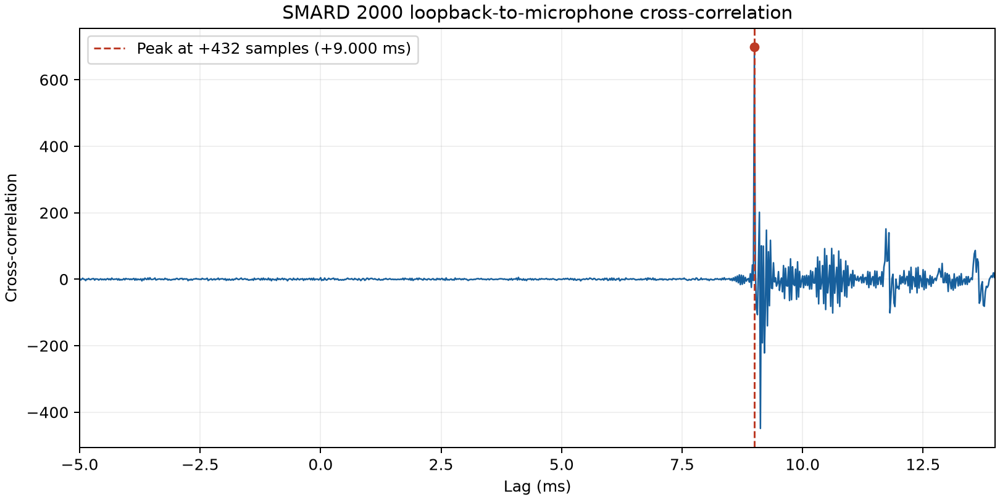

pyacdete.loudspeaker.cross_correlation_delay#
cross_correlation_delay(x, y, fs, *, return_correlation=False)
Estimate the loopback-to-microphone delay using time-domain cross-correlation. In a loudspeaker measurement, this delay includes sound propagation through air and can reflect delays introduced by the loudspeaker, the microphone, and the relative timing of the acquisition channels.
- Smaart’s Delay Finder “calculates the difference in time between your measurement signal and your reference signal” and lists “Propagation time from speaker to microphone” as a contributor. [1]
- Room EQ Wizard states that “measurements will be relative to the loopback timing” and identifies “the time it takes sound to travel from the speaker being measured to the microphone” as part of the measured delay. [2]
Parameters#
xarray_like, shape (N,)Real, one-dimensional samples of the synchronously recorded electrical loopback reference.
yarray_like, shape (N,)Real, one-dimensional samples of the corresponding microphone recording. Use the same length, sampling rate, and recording window as
x. Sample zero represents the same acquisition instant in both arrays, preserving the delay between the recorded waveforms.fsfloatPositive finite sampling frequency shared by both recordings, in Hz.
return_correlationbool, optionalSet to
Trueto include the lag axis and full cross-correlation in the result. The default isFalse.
Both arrays must be nonempty, contain only finite samples, and have a varying signal.
Returns#
result : dict
| Key | Type | Description |
|---|---|---|
delay_samples |
int | Signed integer sample lag. A positive value means y is delayed relative to x. A negative value means y leads x. |
delay_seconds |
float | delay_samples / fs, in seconds. |
lags_samples |
ndarray of int, shape (2N − 1,) | Signed lag axis in samples. Returned when return_correlation=True. |
correlation |
ndarray of float, shape (2N − 1,) | Unnormalized full cross-correlation at each lag. Returned when return_correlation=True. |
Notes#
1. General idea#
In the conventional two-microphone model, two signals and come from a single source . The second signal contains a scaled, delayed copy of the source. The terms and represent noise. [3]
Hold one signal fixed and shift the other along the time axis. The shift that maximizes their similarity estimates the delay. In this API, the two observed signals are the electrical loopback and the microphone recording.
2. Cross-correlation and delay#
Subtract the mean from each signal. For the resulting discrete signals, find the peak of the full linear cross-correlation and convert its lag from samples to seconds. [3, 4, 5]
For real-valued inputs, this convention matches correlate(y, x, mode="full"). A positive lag means the microphone recording arrives after the reference. SciPy’s method="auto" selects direct summation or FFT computation for the same linear cross-correlation. [4]
At , a lag of 25 samples corresponds to
3. Limitations#
- Bandwidth. A broad autocorrelation tends to produce a broad cross-correlation peak, making its location harder to estimate.
- Finite observation time and noise. Short recordings or strong noise can reduce the accuracy of the delay estimate.
- Multipath propagation. Direct sound and reflections can produce several peaks. The strongest peak can correspond to a reflected path.
References#
- Rational Acoustics. Delay Finder vs. Delay Tracker.
- Room EQ Wizard. Making Measurements.
- C. H. Knapp and G. C. Carter. The generalized correlation method for estimation of time delay. IEEE Transactions on Acoustics, Speech, and Signal Processing, 24(4), 320–327, 1976.
- SciPy.
scipy.signal.correlate. - SciPy.
scipy.signal.correlation_lags. - J. K. Nielsen, J. R. Jensen, S. H. Jensen and M. G. Christensen. The Single- and Multichannel Audio Recordings Database (SMARD). IWAENC, 2014.
Examples#
Measure delay in SMARD configuration 2000#
Use the electrical loopback and the single-microphone recording from the same white Gaussian noise playback. Both files are mono, sampled at 48 kHz, and contain 576,000 samples. [6]
Step 1. Download the files
On Windows, install Python 3.14. Save the wheel and the runner in Downloads\Delay-demo. Extract the SMARD configuration 2000 raw archive into Downloads\2000. The two FLAC files are inside 2000_20140121-1125. [6]
| File | Purpose |
|---|---|
pyacdete-0.1.2-py3-none-any.whl |
Installs the library containing cross_correlation_delay. |
smard_delay_example.py |
Reads the FLACs, calls the installed function, and saves the curve. |
wgn_48kHz_ch8_DirLS.flac |
Electrical loopback reference, x. |
wgn_48kHz_ch24_single_mic.flac |
Microphone recording, y. |
Step 2. Install and run in PowerShell
Set-Location -LiteralPath "$env:USERPROFILE\Downloads\Delay-demo"
py -3.14 -m venv .venv
& ".\.venv\Scripts\python.exe" -m pip install --index-url https://pypi.org/simple --timeout 60 ".\pyacdete-0.1.2-py3-none-any.whl[smard]"
& ".\.venv\Scripts\python.exe" ".\smard_delay_example.py" "$env:USERPROFILE\Downloads\2000\2000_20140121-1125"
The runner calls the API with return_correlation=True, converts the lag axis to milliseconds, and saves smard_delay_correlation.png next to the script.
Recorded result
Sample rate: 48000 Hz
Samples per channel: 576000
Delay: +432 samples
Delay: +0.009000000 s (+9.000000 ms)
Plot saved: smard_delay_correlation.png

